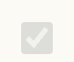

Cookie consent
Every rule that paints this component, in one file. Colour through a role, geometry straight from a primitive.
What it is
The one place where the product asks permission instead of asking for a decision about money, and the one place where the honest answer costs the product something. GDPR and ePrivacy require a real choice, and a real choice means Reject is exactly as easy as Accept.
Everything about the banner is that sentence made into markup: three actions of equal weight, no pre-ticked category, plain language about what each kind of cookie does, and no second-guessing after a person answers. It is the component most likely to be quietly degraded later, because every dark pattern in this space is a small change to one of those four things.
Anatomy
Which part is which, in the product's own words. Every class named here is one this file styles, and the build fails if it is not.
.cc-banner- the band..cc-inneris the row inside it and.cc-textthe sentence..cc-actions- the three controls, and their EQUAL weight is the decision: none of the three is the brass action, because a brass Accept beside a quiet Reject is a choice with a thumb on the scale..cc-btn- one of those controls, from the quiet chip family..cc-manage- the second layer, where the categories are..cc-cats,.cc-cat,.cc-cat-main,.cc-cat-name,.cc-cat-desc- one category: its switch, its name and one plain sentence saying what it does. The description is not optional; a category a person cannot understand is not a category they can consent to..cc-policy- the link out to the full text, which is the only link in the component..cc-note- the line under the categories..cc-page,.cc-ph,.cc-ph-line,.w90- the standalone page and its placeholder lines, which is where the banner is read rather than answered.
Live
The component in the markup it ships with, quoted from the frozen kit, inside the product's own wrapper and painted by components/index.css alone. Each frame is a page of its own, so the width under the title is a real viewport and the media queries answer to it. One row per CONTROL, in one column, and a scope is present only where the scope is what the row is about: twelve of the sixteen combinations the product wears were measured against the same markup with no scope above them and came out identical over thirteen properties, so a plate around those would be showing the reader a dialog to prove something about a button. The numbers for every row are in the axis table one section down, written once. These are live pages and not pictures. Hover them, press them, Tab into them.
States, as they measure
The frames above are the rendering; this is the reading of them. Every number here was taken in a browser with a REAL pointer, a real Tab and the mouse button really held down (ui-kit/_verify/states.cjs), because a hover value is the cascade resolved and cannot be read out of a declaration. Nothing here is a state faked with a stand class. One block per distinct FACE: two elements that measure the same in all four states in both themes are one answer, however many screens carry them, and that grouping is computed rather than chosen. Rest says what the face IS; every row under it says only what that state MOVES, which is the question a reader actually has. The ring is not among the nine values, because outline is drawn outside the box: a focus row that reports no movement is saying the face does not move, and the ring is on the live frame. The numbers go stale the moment a rule changes, so each block records the files it was measured from and python3 ui-kit/_states.py fails when their bytes move.
The policy link, the one link in the component, underlined at rest rather than on hover: a person deciding what to allow should be able to see where the full text is without pointing at it.
| state | what the browser measured |
|---|---|
| rest | groundrgba(0, 0, 0, 0)edgergb(215, 172, 83)inkrgb(215, 172, 83) |
| hover | nothing in the nine values moves |
| held down | nothing in the nine values moves |
| focused by keyboard | nothing in the nine values moves |
| state | what the browser measured |
|---|---|
| rest | groundrgba(0, 0, 0, 0)edgergb(104, 79, 24)inkrgb(104, 79, 24) |
| hover | nothing in the nine values moves |
| held down | nothing in the nine values moves |
| focused by keyboard | nothing in the nine values moves |
Same answer, measured across all four states in both themes: button.kit-here.cc-btn.
One of the three actions, at rest, hovered, held and focused. The quiet chip: ground answers, edge takes the soft brass. All three look identical in every state, which is the component's whole argument.
| state | what the browser measured |
|---|---|
| rest | groundrgb(36, 40, 47)edgergb(43, 47, 56)edge width1pxinkrgb(237, 231, 218)corner10px |
| hover | groundrgb(32, 36, 42) from rgb(36, 40, 47)edgergba(199, 162, 78, 0.45) from rgb(43, 47, 56) |
| held down | groundrgb(25, 27, 31) from rgb(36, 40, 47)edgergba(199, 162, 78, 0.45) from rgb(43, 47, 56) |
| focused by keyboard | nothing in the nine values moves |
| state | what the browser measured |
|---|---|
| rest | groundrgb(252, 250, 244)edgergb(172, 170, 164)edge width1pxinkrgb(33, 31, 25)corner10px |
| hover | groundrgb(249, 247, 241) from rgb(252, 250, 244)edgergba(199, 162, 78, 0.6) from rgb(172, 170, 164) |
| held down | groundrgb(243, 241, 235) from rgb(252, 250, 244)edgergba(199, 162, 78, 0.6) from rgb(172, 170, 164) |
| focused by keyboard | nothing in the nine values moves |
A category switch, off. The necessary category ships disabled and on, which is a fact about what the switch can do rather than a style.
| state | what the browser measured |
|---|---|
| rest | groundrgba(0, 0, 0, 0)edgergb(84, 84, 84)inkrgb(84, 84, 84)fade0.7 |
| hover | nothing in the nine values moves |
| held down | nothing in the nine values moves |
| disabled | nothing in the nine values moves |
| state | what the browser measured |
|---|---|
| rest | groundrgba(0, 0, 0, 0)edgergb(84, 84, 84)inkrgb(84, 84, 84)fade0.7 |
| hover | nothing in the nine values moves |
| held down | nothing in the nine values moves |
| disabled | nothing in the nine values moves |

Not staged: focus. No specimen puts this one where the state can be raised, which is a specimen debt and not a missing rule.
The same switch on, in brass rather than green, because green means an outcome in this product and consent is not one.
| state | what the browser measured |
|---|---|
| rest | groundrgba(0, 0, 0, 0)edgergb(0, 0, 0)inkrgb(0, 0, 0) |
| hover | nothing in the nine values moves |
| held down | nothing in the nine values moves |
| focused by keyboard | nothing in the nine values moves |
| state | what the browser measured |
|---|---|
| rest | groundrgba(0, 0, 0, 0)edgergb(0, 0, 0)inkrgb(0, 0, 0) |
| hover | nothing in the nine values moves |
| held down | nothing in the nine values moves |
| focused by keyboard | nothing in the nine values moves |
When to use
The judgement a generator cannot read out of css, and the reason ui-kit/authored/cookie-consent.md exists.
Once, on first arrival, before anything measurable happens. The banner is the whole product's gate, not a screen's, and it is why the fonts in this system are served from this repository: a font host would have carried a visitor's address to a third party before the banner had drawn.
The page behind it is for the person who wants to change their mind. It is not a marketing page and it does not repeat the argument for consenting.
There is no third use. A permission prompt for notifications is not this component: it is the operating system's, and the product's own screen for it is a notice explaining why the ask is coming.
The rule, and the anti-rule
One sentence to follow and one mistake worth naming. An anti-rule has to name the component that should have been used instead, or it is a complaint rather than an address, and the build checks that it does.
Reject is as easy as Accept, always: same weight, same size, same distance from the thumb, and no category ticked before a person has looked at it.
Never make one of these three the brass action: a primary button here would turn a legal choice into a recommendation, and the product would be reading consent it did not honestly get.
Seen: voice/docs/microcopy.md L1227, where the equal weight of the three actions was written into the copy record with the reason, before the component was drawn. That row is what this rule is enforcing, and it is the only place in the repo where it is written down.
Roles it reads
Colour comes in only through these. Change one on the token page and it changes here and on every screen at once.
--bg-card-quiet--bg-control--bg-control-hover--bg-pressed--border-brass-hover--border-hairline--color-action--color-action-pressed--edge-groove-light--glow-brass--opacity-locked--shadow-ink--text-brass--text-muted--text-primaryClasses
Every class this file styles, and how many of the 105 painted screens carry it. A zero is not automatically dead: the last column says whether the class is built at runtime, shown only in the kit, a leftover of the grey wireframes, used by a course page, or genuinely used by nothing. Gate 30 fails the build on the last kind.
| class | screens | if zero |
|---|---|---|
| .app-case | 105 | |
| .cc-actions | 1 | |
| .cc-banner | 1 | |
| .cc-btn | 1 | |
| .cc-cat | 1 | |
| .cc-cat-desc | 1 | |
| .cc-cat-main | 1 | |
| .cc-cat-name | 1 | |
| .cc-cats | 1 | |
| .cc-inner | 1 | |
| .cc-manage | 1 | |
| .cc-note | 1 | |
| .cc-page | 1 | |
| .cc-ph | 2 | |
| .cc-ph-line | 2 | |
| .cc-policy | 1 | |
| .cc-text | 1 | |
| .w40 | 20 | |
| .w60 | 15 | |
| .w80 | 15 | |
| .w90 | 2 |
Where it stands
Written from
The authored half of this page is the one artefact here no gate can read: a sentence cannot be checked for being true. So it names its sources before it says anything, and the build fails when one of them does not exist. Read this first if you doubt a claim above it.
voice/docs/microcopy.mdL1226 - the banner sentence, recorded with the verdict "plain, no dark pattern"; and L1227, the three actions Accept all / Reject all / Manage, with the reason "reject as easy as accept (equal weight)".wireframes/_critique.mdL245, where the five system nodes including this one were found ABSENT from the product and built.- The 2 painted screens:
ui-visual/cookie-consent.html, the page, andui-visual/toasts.html, where the banner stands in the catalogue. components/base.css, the fonts paragraph: the reason a font host may not be called is that the request carries a visitor's IP to a third party BEFORE this banner has asked anything, and gate 20 fails the build on it.ui-kit/docs/inventory.mdhas no row for this component, which is itself a finding and is recorded in this file's Purpose.
What the file says
The selectors and the css, for a person about to edit them. To change this component, edit components/cookie-consent.css; to change a value it reads, edit the role in components/tokens.css.
Every state rule, and what it moves
| selector | what moves |
|---|---|
| .app-case .cc-policy a:hover | border-bottom-color:var(--text-brass) |
| .app-case .cc-btn:hover | border-color:var(--border-brass-hover);background:var(--bg-control-hover) |
| .app-case .cc-btn:active | background:var(--bg-pressed) |
| .app-case .cc-cat input[type="checkbox"]:disabled | cursor:not-allowed;opacity:var(--opacity-locked) |
| .app-case .cc-cat input[type="checkbox"]:not(:disabled):active | accent-color:var(--color-action-pressed) |
The tokens these states read, on both grounds
Neither panel is a screenshot. Each carries data-theme itself, so the token resolves inside it and a role that was given a value in only one theme shows up here as a control that does not move.
--text-brassConfirm betthe label, on the ground this state puts it on--border-brass-hoverConfirm betthe edge this state draws--bg-control-hoverConfirm betthe ground the control settles onto--bg-pressedConfirm betthe ground the control settles onto--opacity-lockedConfirm betConfirm bethow far the control fades, beside the same control at rest--color-action-pressedConfirm betthe ground the control settles onto--text-brassConfirm betthe label, on the ground this state puts it on--border-brass-hoverConfirm betthe edge this state draws--bg-control-hoverConfirm betthe ground the control settles onto--bg-pressedConfirm betthe ground the control settles onto--opacity-lockedConfirm betConfirm bethow far the control fades, beside the same control at rest--color-action-pressedConfirm betthe ground the control settles ontocomponents/cookie-consent.css
/* components/cookie-consent.css
Component: cookie-consent. Classes: .cc-actions, .cc-banner, .cc-btn, .cc-cat, .cc-cat-desc, .cc-cat-main, .cc-cat-name, .cc-cats, .cc-inner, .cc-manage, .cc-note, .cc-page, .cc-ph, .cc-ph-line, .cc-policy, .cc-text, .w90.
Reads: --bg-card-quiet, --bg-control, --bg-control-hover, --bg-pressed, --border-brass-hover, --border-hairline, --color-action, --color-action-pressed, --edge-groove-light, --glow-brass, --opacity-locked, --shadow-ink, --text-brass, --text-muted, --text-primary
Stand: ui-kit/cookie-consent.html
Stands on: 2 ui-visual screens (cookie-consent.html, toasts.html)
Colour goes through a role, geometry straight from a primitive. No em dash. */
.app-case .cc-ph{display:flex;flex-direction:column;gap:var(--space-8);opacity:.5}
.app-case .cc-ph-line{height:var(--size-12);border-radius:var(--radius-6);background:var(--bg-control)}
.app-case .cc-ph-line.w90{width:90%}
.app-case .cc-ph-line.w80{width:80%}
.app-case .cc-ph-line.w60{width:60%}
.app-case .cc-ph-line.w40{width:40%}
.app-case .cc-page{margin-bottom:var(--space-16)}
.app-case .cc-banner{border:1px solid var(--border-hairline);border-radius:var(--radius-16);background:var(--bg-card-quiet);box-shadow:inset 0 1px 0 var(--edge-groove-light),0 20px 44px -26px var(--shadow-ink);overflow:hidden}
.app-case .cc-inner{padding:var(--space-16);display:flex;flex-direction:column;gap:var(--space-12)}
.app-case .cc-text{color:var(--text-primary);font-size:var(--text-14);line-height:var(--leading-base);margin:0}
.app-case .cc-policy{margin:0;font-size:var(--text-13);display:flex;flex-wrap:wrap;gap:var(--space-12)}
.app-case .cc-policy a{color:var(--text-brass);text-decoration:none;border-bottom:1px solid var(--glow-brass);padding-bottom:var(--space-2)}
.app-case .cc-policy a:hover{border-bottom-color:var(--text-brass)}
.app-case .cc-actions{display:flex;flex-wrap:wrap;gap:var(--space-8)}
.app-case .cc-btn{flex:1 1 auto;min-width:96px;border:1px solid var(--border-hairline);border-radius:var(--radius-10);background:var(--bg-control);color:var(--text-primary);font-family:var(--font-body);font-weight:var(--weight-semibold);font-size:var(--text-13);padding:var(--space-12) var(--space-12);min-height:var(--control-44);cursor:pointer;transition:border-color var(--dur-quick) ease,background var(--dur-quick) ease}
.app-case .cc-btn:hover{border-color:var(--border-brass-hover);background:var(--bg-control-hover)}
/* Accept all / Reject all / Manage are quiet controls on a flat ground, so the press is the one
system ground and not a banner's own idea. Equal specificity to the hover above, so it has to
sit after it; the hover border stays lit underneath, which is what makes the darker fill read
as held rather than as a second hover. Flat at rest, so nothing to unlift. None of the three
is ever disabled and none gets a disabled skin: consent is always available, and a Reject that
could go dead is the dark pattern this banner exists to answer. */
.app-case .cc-btn:active{background:var(--bg-pressed)}
.app-case .cc-note{color:var(--text-muted);font-size:var(--text-12);line-height:var(--leading-base);margin:0}
.app-case .cc-manage{border-top:1px solid var(--border-hairline);padding-top:var(--space-12);display:flex;flex-direction:column;gap:var(--space-8)}
.app-case .cc-cats{list-style:none;margin:0;padding:0;display:flex;flex-direction:column;gap:var(--space-8)}
.app-case .cc-cat{border:1px solid var(--border-hairline);border-radius:var(--radius-10);background:var(--bg-control);padding:var(--space-12) var(--space-12)}
.app-case .cc-cat-main{display:flex;align-items:center;justify-content:space-between;gap:var(--space-12)}
.app-case .cc-cat-name{font-family:var(--font-body);font-weight:var(--weight-semibold);font-size:var(--text-14);color:var(--text-primary)}
.app-case .cc-cat-desc{color:var(--text-muted);font-size:var(--text-12);line-height:var(--leading-base);margin:var(--space-8) 0 0}
.app-case .cc-cat input[type="checkbox"]{width:var(--icon-18);height:var(--icon-18);accent-color:var(--color-action);flex:0 0 auto;cursor:pointer}
.app-case .cc-cat input[type="checkbox"]:disabled{cursor:not-allowed;opacity:var(--opacity-locked)}
/* The category box cannot press with --bg-pressed. It is a native checkbox with appearance auto,
the browser draws it, and background-color never reaches it: the rule would read as done in the
source and paint nothing on the page, which is the one defect this repo keeps paying for. What
the box does own is accent-color, and a ticked box IS a flat brass ground, which is exactly the
case --color-action-pressed was declared for on the filters switch: flat brass has no gradient
angle to reverse. The press therefore reads on a category that is ON, which is the category a
person is about to turn off, and the browser's own press covers the empty box.
:not(:disabled) keeps Necessary out. That one is LOCKED ON, not unavailable, and the whole
message of the row is that it is on: it must not answer the pointer at all, so no hover and no
press, and --opacity-locked above stays the only thing it says. No hover on the live boxes
either, for the reason the press had to change mechanism: there is nothing paintable at rest
short of appearance:none, and redrawing the tick is a new component, not a state. */
.app-case .cc-cat input[type="checkbox"]:not(:disabled):active{accent-color:var(--color-action-pressed)}